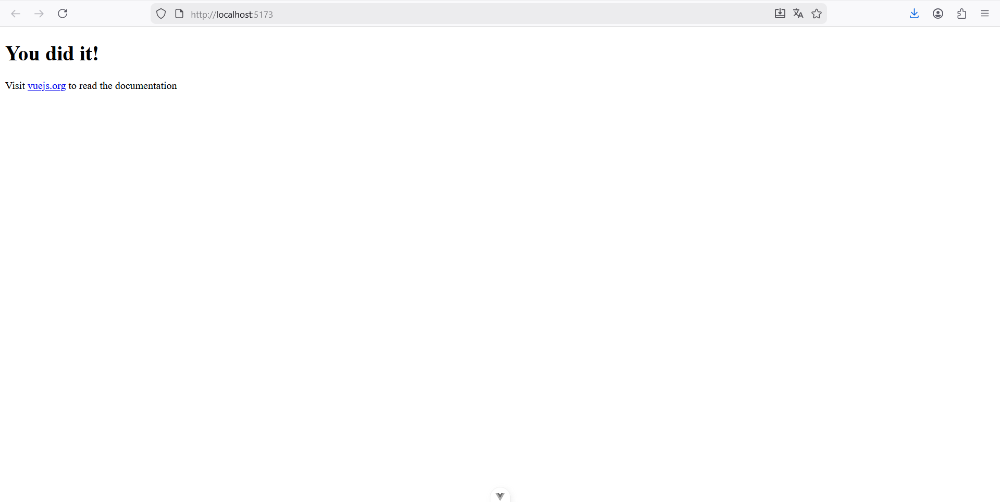
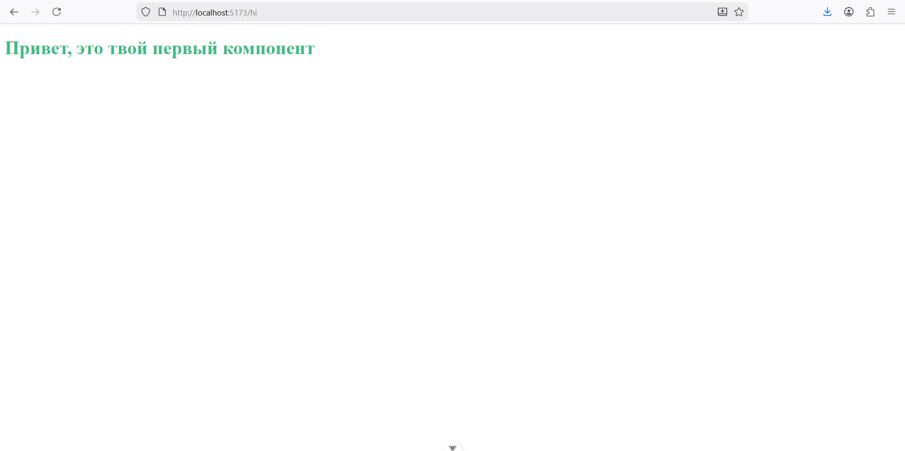
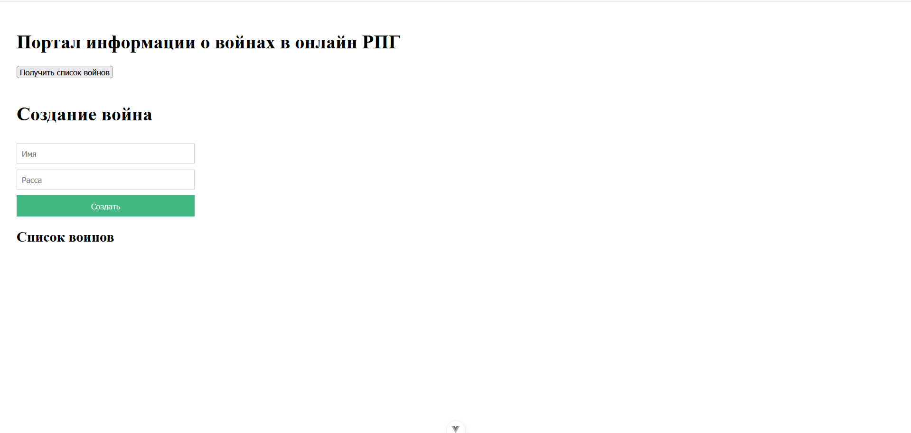

Отчет по Практической работе №4.2
Тема: Введение во Vue.js
В рамках практической работы была успешно проведена инициализация, настройка и запуск одностраничного приложения (SPA) на базе фреймворка Vue.js (версия 3, с использованием Vite). Были освоены базовые концепции компонентного подхода, маршрутизации (роутинга) и взаимодействия компонентов с внешними данными (Backend API).
1. Подготовка и Запуск Проекта
1.1. Инициализация и Установка
Проект был инициализирован с помощью утилиты CLI:
$ npm init vue@latest
После создания структуры проекта, были установлены зависимости и осуществлен запуск сервера для разработки:
$cd vue-project$ npm install
$ npm run dev
Проект успешно запустился на локальном хосте:

1.2. Настройка Роутинга
Для управления страницами в приложении был настроен Vue Router:
* В файле src/main.js импортирован и подключен сконфигурированный роутер.
* В файле src/App.vue был размещен компонент <router-view />.
<template>
<div class="app">
<router-view />
</div>
</template>
2. Создание Первого Компонента и Роута
2.1. Компонент Hello.vue
Был создан тестовый компонент src/components/Hello.vue.
<template>
<div>
<h1>Привет, это твой первый компонент</h1>
</div>
</template>
<script>
export default {
}
</script>
<style scoped>
h1 {
color: #42b983;
}
</style>
2.2. Настройка Роута /hi
В файле конфигурации роутера src/router/index.js был добавлен маршрут /hi, который ссылается на созданный компонент Hello.
import Hello from "@/components/Hello.vue";
import {createRouter, createWebHistory} from "vue-router";
const routes = [
{
path: '/hi',
component: Hello
},
]
const router = createRouter({
history: createWebHistory(), routes
})
export default router
2.3. Настройка главного файла: src/main.js
// src/main.js
import { createApp } from 'vue'
import App from './App.vue'
import './assets/main.css'
import router from "./router";
createApp(App).use(router).mount('#app')
После перехода по адресу http://localhost:5173/hi компонент был успешно отображен:

3. Разделение Компонентов и Работа с Данными
3.1. Создание Представления Warriors.vue
Представление src/views/Warriors.vue стало основной страницей для работы с данными.
<template>
<div class="app">
<h1>Портал информации о войнах в онлайн РПГ</h1>
<button v-on:click="fetchWarriors">Получить список войнов</button>
<warrior-form />
<warrior-list
v-bind:warriors="warriors"
/>
</div>
</template>
<script>
import WarriorForm from "@/components/WarriorForm.vue";
import WarriorList from "@/components/WarriorList.vue";
import axios from "axios";
export default {
components: {
WarriorForm,
WarriorList
},
data() {
return {
warriors: [],
}
},
methods: {
async fetchWarriors () {
try {
const response = await axios.get('http://62.109.28.95:8890/warriors/list/')
console.log(response.data.results)
this.warriors = response.data.results
} catch (e) {
alert('Ошибка')
}
}
},
mounted() {
this.fetchWarriors()
}
}
</script>
<style scoped>
.app {
padding: 20px;
}
button {
margin-bottom: 20px;
}
</style>
3.2. Компонент WarriorList.vue
Этот компонент отвечает за отображение списка воинов, принимая данные через props.
<template>
<div>
<h2>Список воинов</h2>
<div class="warrior" v-for="warrior in warriors" :key="warrior.name">
<div><strong>Имя:</strong> {{ warrior.name }}</div>
<div><strong>Расса:</strong> {{ warrior.race }}</div>
<hr>
</div>
</div>
</template>
<script>
export default {
props: {
warriors: {
type: Array,
required: true
}
}
}
</script>
<style scoped>
.warrior {
margin-bottom: 10px;
}
</style>
3.3. Компонент WarriorForm.vue
Данный компонент содержит форму для создания нового воина.
<template>
<form @submit.prevent>
<h1>Создание война</h1>
<input
v-model="warrior.name"
class="input"
type="text"
placeholder="Имя"
>
<input
v-model="warrior.race"
class="input"
type="text"
placeholder="Расса"
>
<button class="btn" v-on:click="createWarrior">Cоздать</button>
</form>
</template>
<script>
import axios from "axios";
export default {
name: "WarriorForm",
data () {
return {
warrior: {
name: '',
race: ''
}
}
},
methods: {
createWarrior() {
axios.post('http://62.109.28.95:8890/warrior/create1', {
race: this.warrior.race,
name: this.warrior.name,
});
this.warrior.name = '';
this.warrior.race = '';
},
},
}
</script>
<style scoped>
form {
display: flex;
flex-direction: column;
gap: 10px;
max-width: 300px;
margin-bottom: 20px;
}
.input {
padding: 8px;
border: 1px solid #ccc;
}
.btn {
padding: 10px;
background-color: #42b983;
color: white;
border: none;
cursor: pointer;
}
</style>
Итоговый результат:

4. Выводы
В ходе выполнения практической работы были получены фундаментальные навыки работы с Vue.js:
1. Настройка среды: Успешно установлен и запущен проект Vue 3 с помощью NPM и Vite.
2. Компонентный подход: Освоено деление кода на template, script, style и принципы разделения на views и components.
3. Маршрутизация: Настроен Vue Router для создания многостраничного приложения (SPA).
4. Связывание данных: Использованы ключевые директивы Vue, такие как v-for, v-bind, и v-model.
5. Взаимодействие с API: Реализованы асинхронные запросы GET и POST к внешнему Backend-серверу для получения и отправки данных.